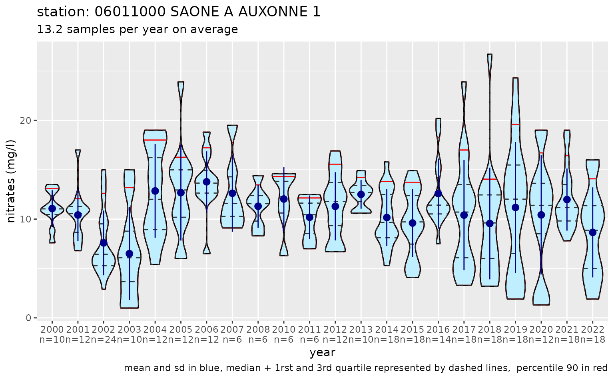
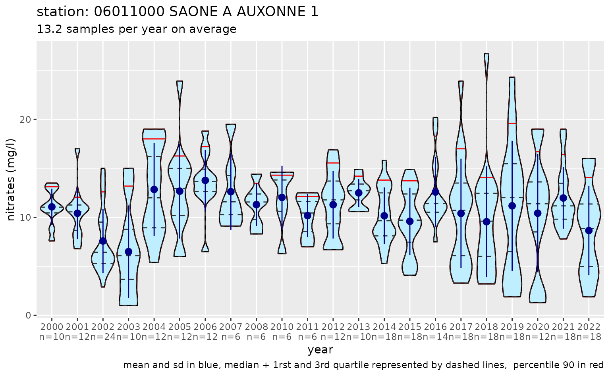

Getting data from the API “qualité des cours d’eau”
Philippe Amiotte Suchet, David Dorchies
Source:vignettes/data_extraction_naiades.Rmd
data_extraction_naiades.RmdThis vignette describes how to use functions of the R package hubeau to query the French Naïades database through the API “qualité des cours d’eau”.
The Naïades database gathers hydrobiology, hydrogeomophomogy and physico-chemical information for French river and lake water. The information is associated with a water quality station (location), a date (the day of the sampling or of the observation) and a material (water, suspended matter, sediment, river bed, fish, etc.). The API “qualité des cours d’eau” focuses only on water physico-chemical properties.
This example shows how to get physico-chemical information (here nitrates concentration) from the Naïades database on water monitoring sites belonging to an administrative entity (here the Cote d’Or department).
Get started
How it works
The hubeau package provides functions to query the databases of the French water information system using the Hub’eau API.
The functions are named as follows:
hubeau::get_[API]_[endpoint](argument) where:
[API] is the name of the API (one API = one database)
[endpoint] is the type of information which is queried in the database; the query is defined by a list of arguments.
For example the function get_qualite_rivieres_station()
uses the API “qualité des cours d’eau” to get the water quality stations
corresponding to requirements described in the station()
function.
See the readme in the R package hubeau.
Listing the APIs searchable with the hubeau R package
The hubeau R package allows to query 11 databases which can be listed as follow:
list_apis()
#> [1] "prelevements" "indicateurs_services" "hydrometrie"
#> [4] "niveaux_nappes" "poisson" "ecoulement"
#> [7] "hydrobio" "temperature" "qualite_eau_potable"
#> [10] "qualite_nappes" "qualite_rivieres"The name of the API which will be used below is
"qualite_rivieres" using the “qualité
des cours d’eau” Hub’eau API allowing to query the Naïades
database.
Available endpoints for the “qualite_rivieres” API
The function
list_endpoints(api = "name of the api given by <list_apis>")
of the hubeau R package lists the available endpoints. For the
qualite_rivieres API it gives:
list_endpoints(api = "qualite_rivieres")
#> [1] "analyse_pc" "condition_environnementale_pc"
#> [3] "operation_pc" "station_pc"These 4 endpoints are described in the Hub’eau web page of the API (see “opération” section).
[station_pc] lists the water stations with physico-chemical analysis;
[operation_pc] lists the sampling operation occuring on each water station;
[condition_environnementale_pc] lists the environmental conditions observed during water sampling (air temperature, presence of mosses, alguae, etc.);
[analyse_pc] gives the results of the physico-chemical analysis made on water samples of a selected water station.
Each endpoint is defined by a list of arguments to query the database.
List of arguments by endpoint
The function
list_params(api = "name of the api", endpoint = "name of the endpoint")
gives the arguments which can be used in the query. These arguments
correspond to the parameters of the Hub’eau API and are described in the
Hub’eau
web page of the API.
For example, the following instruction lists the available arguments for the endpoint “condition_environnementale_pc”:
list_params(api = "qualite_rivieres", endpoint = "condition_environnementale_pc")
#> [1] "bbox" "code_banque_reference" "code_commune"
#> [4] "code_cours_eau" "code_departement" "code_eu_masse_eau"
#> [7] "code_groupe_parametres" "code_masse_eau" "code_parametre"
#> [10] "code_prelevement" "code_qualification" "code_region"
#> [13] "code_station" "code_statut" "date_debut_maj"
#> [16] "date_debut_prelevement" "date_fin_maj" "date_fin_prelevement"
#> [19] "distance" "distance" "fields"
#> [22] "format" "latitude" "latitude"
#> [25] "libelle_commune" "libelle_departement" "libelle_masse_eau"
#> [28] "libelle_parametre" "libelle_qualification" "libelle_region"
#> [31] "libelle_station" "longitude" "longitude"
#> [34] "mnemo_statut" "nom_cours_eau" "nom_groupe_parametres"
#> [37] "page" "size" "sort"Extracting physico-chemical data
This example shows how to extract the nitrates concentration values in river water samples for stations located in the Cote d’Or department from 2000 to 2022.
Availability of stations in the Côte d’Or department
The function get_qualite_rivieres_station(…) will be
used to list the available stations. Arguments for the function can be
listed as follow:
list_params(api = "qualite_rivieres", endpoint = "station_pc")
#> [1] "bbox" "code_banque_reference" "code_bassin_dce"
#> [4] "code_commune" "code_cours_eau" "code_departement"
#> [7] "code_eu_masse_eau" "code_fraction" "code_groupe_parametres"
#> [10] "code_masse_eau" "code_parametre" "code_qualification"
#> [13] "code_region" "code_reseau" "code_sous_bassin"
#> [16] "code_station" "code_statut" "code_support"
#> [19] "date_debut_maj" "date_debut_prelevement" "date_fin_maj"
#> [22] "date_fin_prelevement" "distance" "distance"
#> [25] "exact_count" "fields" "format"
#> [28] "latitude" "latitude" "libelle_commune"
#> [31] "libelle_departement" "libelle_fraction" "libelle_masse_eau"
#> [34] "libelle_parametre" "libelle_qualification" "libelle_region"
#> [37] "libelle_reseau" "libelle_station" "libelle_support"
#> [40] "longitude" "longitude" "mnemo_statut"
#> [43] "nom_bassin_dce" "nom_cours_eau" "nom_groupe_parametres"
#> [46] "nom_sous_bassin" "page" "size"
#> [49] "sort" "type_entite_hydro"The argument “code_departement” will be used with the value “21” which is the French administrative code for Côte d’Or.
station_21 <- get_qualite_rivieres_station(code_departement = "21")
station_21
#> # A tibble: 468 × 48
#> code_station libelle_station uri_station durete coordonnee_x coordonnee_y
#> <chr> <chr> <chr> <lgl> <dbl> <dbl>
#> 1 03000029 LE RUISSEAU DU FEU… https://id… NA 829934 6715298
#> 2 03000033 La Seine à Courceau https://id… NA 827760 6716247
#> 3 03000070 Ruisseau de Jugny https://id… NA 829586 6718953
#> 4 03000100 LA SEINE A BAIGNEU… https://id… NA 826286 6724377
#> 5 03000180 LE RU DE COSNE A Q… https://id… NA 824754 6731499
#> 6 03000311 La coquille à Etal… https://id… NA 831785 6728503
#> 7 03000344 LA COQUILLE A AIGN… https://id… NA 830428 6730843
#> 8 03000346 La coquille à l'av… https://id… NA 829398 6731552
#> 9 03000440 LE REVINSON A DUES… https://id… NA 827650. 6730547.
#> 10 03000450 LE REVINSON A QUEM… https://id… NA 825751 6731858
#> # ℹ 458 more rows
#> # ℹ 42 more variables: code_projection <chr>, libelle_projection <chr>,
#> # longitude <dbl>, latitude <dbl>, code_commune <chr>, libelle_commune <chr>,
#> # code_departement <chr>, libelle_departement <chr>, code_region <chr>,
#> # libelle_region <chr>, code_cours_eau <chr>, nom_cours_eau <chr>,
#> # uri_cours_eau <chr>, code_masse_deau <chr>, code_eu_masse_deau <chr>,
#> # nom_masse_deau <chr>, uri_masse_deau <chr>, code_eu_sous_bassin <chr>, …The result of the query gives a tibble of 466 rows and 48 columns which means that the database comprises 466 water stations in the Côte d’Or department being described by 48 parameters.
Retrieving nitrate concentration in river water of the Côte d’or department
The function get_qualite_rivieres_analyse(…) is used to
get the physico-chemical analysis for selected stations. Arguments for
the function can be listed as follow:
list_params(api = "qualite_rivieres", endpoint = "analyse_pc")
#> [1] "bbox" "code_banque_reference" "code_bassin_dce"
#> [4] "code_commune" "code_cours_eau" "code_departement"
#> [7] "code_eu_masse_eau" "code_fraction" "code_groupe_parametres"
#> [10] "code_masse_eau" "code_parametre" "code_prelevement"
#> [13] "code_qualification" "code_region" "code_reseau"
#> [16] "code_sous_bassin" "code_station" "code_statut"
#> [19] "code_support" "date_debut_maj" "date_debut_prelevement"
#> [22] "date_fin_maj" "date_fin_prelevement" "distance"
#> [25] "distance" "fields" "format"
#> [28] "latitude" "latitude" "libelle_commune"
#> [31] "libelle_departement" "libelle_fraction" "libelle_masse_eau"
#> [34] "libelle_parametre" "libelle_qualification" "libelle_region"
#> [37] "libelle_reseau" "libelle_station" "libelle_support"
#> [40] "longitude" "longitude" "mnemo_statut"
#> [43] "nom_bassin_dce" "nom_cours_eau" "nom_groupe_parametres"
#> [46] "nom_sous_bassin" "page" "size"
#> [49] "sort" "type_entite_hydro"These arguments are described in the Hub’eau API web page.
The arguments in this example are:
-
code_departement: French administrative code for department (“21” for Côte d’Or) -
code_param: Code of the physico-chemical parameter; if more than one parameter, codes must be separated by a commas; the maximum number of codes is 200. The code of a given parameter that can be found in the French water reference system “Sandre”. For nitrates the code is “1340” -
date_debut_prelevementetdate_fin_prelevement: beginning and end dates of samples (“yyyy-mm-dd” format).
The query can be written as follows:
nitrates_21_raw <- get_qualite_rivieres_analyse(code_departement = "21",
date_debut_prelevement = "2000-01-01",
date_fin_prelevement = "2000-12-31",
code_parametre = "1340")
dim(nitrates_21_raw)
#> [1] 221 125
nitrates_21_raw
#> # A tibble: 221 × 125
#> code_station libelle_station uri_station code_support libelle_support
#> <chr> <chr> <chr> <chr> <chr>
#> 1 06011000 "SAONE A AUXONNE 1" https://id… 3 Eau
#> 2 06017050 "SAONE A CHARREY-SUR-S… https://id… 3 Eau
#> 3 03002100 "LA SEINE A CHARREY-SU… https://id… 0 Support inconnu
#> 4 06016500 "OUCHE A ECHENON " https://id… 3 Eau
#> 5 06016000 "OUCHE A CRIMOLOIS 1" https://id… 3 Eau
#> 6 06013800 "TILLE A CHAMPDOTRE 1" https://id… 3 Eau
#> 7 03041000 "LA BRENNE A SAINT-REM… https://id… 3 Eau
#> 8 06017050 "SAONE A CHARREY-SUR-S… https://id… 3 Eau
#> 9 06013800 "TILLE A CHAMPDOTRE 1" https://id… 3 Eau
#> 10 06016000 "OUCHE A CRIMOLOIS 1" https://id… 3 Eau
#> # ℹ 211 more rows
#> # ℹ 120 more variables: uri_support <chr>, code_fraction <chr>,
#> # libelle_fraction <chr>, uri_fraction <chr>, date_prelevement <chr>,
#> # heure_prelevement <chr>, date_analyse <chr>, heure_analyse <lgl>,
#> # code_parametre <chr>, libelle_parametre <chr>, uri_parametre <chr>,
#> # resultat <dbl>, code_groupe_parametre1 <chr>, code_groupe_parametre2 <chr>,
#> # code_groupe_parametre3 <chr>, code_groupe_parametre4 <chr>, …The query returns a tibble of more than 13000 lines and 134 columns.
Each line corresponds to a nitrate concentration value
(resultat) in mg.L-1 for a given station
(code_station) and for a given date
(date_prelevement).
The argument fields of the function
get_qualite_rivieres_analyse() allows to specify which
parameter (i.e. column) must be returned in the resulting tibble which
is usefull for limiting the size of the tibble.
nitrates_21 <- get_qualite_rivieres_analyse(
code_departement = "21",
date_debut_prelevement = "2000-01-01",
date_fin_prelevement = "2022-12-31",
code_parametre = "1340",
fields = c(
"code_station",
"libelle_station",
"libelle_fraction",
"date_prelevement",
"resultat",
"symbole_unite"
)
)
dim(nitrates_21)
#> [1] 13314 6
nitrates_21
#> # A tibble: 13,314 × 6
#> code_station libelle_station libelle_fraction date_prelevement resultat
#> <chr> <chr> <chr> <chr> <dbl>
#> 1 06011000 "SAONE A AUXONNE 1" Phase aqueuse d… 2000-01-11 13
#> 2 06017050 "SAONE A CHARREY-SUR… Phase aqueuse d… 2000-01-11 14.8
#> 3 03002100 "LA SEINE A CHARREY-… Phase aqueuse d… 2000-01-18 31
#> 4 06016500 "OUCHE A ECHENON " Phase aqueuse d… 2000-01-18 20
#> 5 06016000 "OUCHE A CRIMOLOIS 1" Phase aqueuse d… 2000-01-18 17
#> 6 06013800 "TILLE A CHAMPDOTRE … Phase aqueuse d… 2000-01-18 25.8
#> 7 03041000 "LA BRENNE A SAINT-R… Phase aqueuse d… 2000-01-18 22.1
#> 8 06017050 "SAONE A CHARREY-SUR… Phase aqueuse d… 2000-02-15 11.8
#> 9 06013800 "TILLE A CHAMPDOTRE … Phase aqueuse d… 2000-02-15 20.8
#> 10 06016000 "OUCHE A CRIMOLOIS 1" Phase aqueuse d… 2000-02-15 15.2
#> # ℹ 13,304 more rows
#> # ℹ 1 more variable: symbole_unite <chr>The query still gives a tibble of more than 13000 lines but with 6 columns only.
Extraction and analysis of data station by station
Objectives
In the tibble created in the previous example, a lot of stations are not suitable for computing basic statistical parameters (annual or interannual mean, median, standard deviation, etc.) because they provide only few results each year and are not representative of the seasonal cycle of nitrates. This means that the tibble resulting from the query may include a lot of unexploitable data and could be much smaller.
The data can be computed directly from the database station by station by including the query in a loop using a known list of stations. For each station, the number of results (available nitrates data) is calculated each year and compared to a threshold to determine if a statistical/graphical analysis can be computed or not.
Selection of stations available for analysis
In the following example, a list of the stations of the Côte d’Or department is created.
#list of station to query
station_21 <- get_qualite_rivieres_station(code_departement = "21")Total number of stations is:
nrow(station_21)
#> [1] 468We use the function get_qualite_rivieres_analyse() to
retrieve nitrate concentration values
(code_parametre = "1340") from 2000 to 2022.
nitrates_21 <- get_qualite_rivieres_analyse(
code_departement = "21",
date_debut_prelevement = "2000-01-01",
date_fin_prelevement = "2022-12-31",
code_parametre = "1340",
fields = c(
"code_station",
"libelle_station",
"libelle_fraction",
"date_prelevement",
"resultat",
"symbole_unite"
)
)We compute some annual statistics for each station:
nitrates_21 <- nitrates_21 %>%
mutate(date_prelevement = as.POSIXct(date_prelevement),
year = year(date_prelevement))
station_stats <- nitrates_21 %>%
group_by(code_station, libelle_station, year) %>%
summarise(nb_analyses = n(),
nitrate_mean = mean(resultat),
nitrate_p90 = quantile(resultat, probs = 0.9),
.groups = 'drop')
station_stats
#> # A tibble: 1,830 × 6
#> code_station libelle_station year nb_analyses nitrate_mean nitrate_p90
#> <chr> <chr> <dbl> <int> <dbl> <dbl>
#> 1 03000029 LE RUISSEAU DU FEU A… 2017 6 23.4 37.8
#> 2 03000029 LE RUISSEAU DU FEU A… 2021 6 28.3 36.5
#> 3 03000029 LE RUISSEAU DU FEU A… 2022 12 24.5 36.6
#> 4 03000033 La Seine à Courceau 2016 6 21.3 29.2
#> 5 03000033 La Seine à Courceau 2017 6 18.2 30.2
#> 6 03000033 La Seine à Courceau 2021 6 25.8 31.5
#> 7 03000033 La Seine à Courceau 2022 18 20 25
#> 8 03000070 Ruisseau de Jugny 2016 6 15.7 20.4
#> 9 03000070 Ruisseau de Jugny 2017 5 20.9 35.8
#> 10 03000070 Ruisseau de Jugny 2021 6 17.8 25.5
#> # ℹ 1,820 more rowsThe number of lines of the tibble station_stats
corresponds to the number of stations with at least one sample.
Stations with less than 10 values per year on average and less than 10 years of data are excluded of the statistical analysis.
valid_stations <- station_stats %>%
group_by(code_station, libelle_station) %>%
summarise(analyses_per_year = mean(nb_analyses), nb_years = n()) %>%
filter(analyses_per_year >= 10, nb_years >= 10)
valid_stations
#> # A tibble: 13 × 4
#> # Groups: code_station [13]
#> code_station libelle_station analyses_per_year nb_years
#> <chr> <chr> <dbl> <int>
#> 1 03001000 "LA SEINE A NOD-SUR-SEINE 1" 15.4 22
#> 2 03002100 "LA SEINE A CHARREY-SUR-SEINE 1" 11.4 22
#> 3 03006268 "L'OURCE A MENESBLE 1" 15.8 16
#> 4 03006271 "LA GROÈME A TERREFONDREE 1" 12.8 18
#> 5 03006590 "L'OURCE A AUTRICOURT 1" 13.9 22
#> 6 03034720 "LE SEREIN A VIEUX-CHATEAU 2" 14.9 18
#> 7 03036510 "L'ARMANÇON A MONTIGNY-SUR-ARMANCON … 15.9 16
#> 8 03040250 "L'OZE A DARCEY 1" 11.2 17
#> 9 06011000 "SAONE A AUXONNE 1" 13.2 22
#> 10 06014250 "CENT FONDS A SAULON-LA-RUE 1" 10.9 10
#> 11 06016500 "OUCHE A ECHENON " 11.2 22
#> 12 06017050 "SAONE A CHARREY-SUR-SAONE " 12.9 22
#> 13 06017070 "SAONE A SEURRE " 12.8 16The number of rows of the tibble valid_stations
corresponds to the number of stations with at least 10 samples per year
on average and 10 years of data.
Statistical analysis of samples
Then, we plot the annual distribution of nitrate levels with violin plots.
plot_nitrates <- function(code) {
station_details <- station_21[station_21$code_station == code, , drop = FALSE]
mean_samples <- valid_stations$analyses_per_year[valid_stations$code_station == code]
nitrates_station <- nitrates_21 %>% filter(code_station == code)
station_yearly_stats <- station_stats %>% filter(code_station == code)
p <- ggplot(nitrates_station, aes(x = as.factor(year), y = resultat)) +
labs(
x = "year",
y = "nitrates (mg/l)",
title = paste(
"station:",
station_details$code_station,
station_details$libelle_station
),
subtitle = paste(round(mean_samples, 1), "samples per year on average"),
caption = "mean and sd in blue, median + 1rst and 3rd quartile represented by dashed lines, percentile 90 in red"
) +
scale_x_discrete(labels = paste0(station_yearly_stats$year, "\nn=", station_yearly_stats$nb_analyses))
p <-
p +
geom_violin(
trim = TRUE,
scale = "width",
adjust = 0.5,
draw_quantiles = 0.9,
color = "red",
fill = "lightblue1"
) + # draw the violin and adds an horizontal red line corresponding to the quantile 90
geom_violin(
trim = TRUE,
scale = "width",
adjust = 0.5,
color = "black",
fill = "transparent"
) + # draw the same violin but with black lines and no fill
geom_violin(
trim = TRUE,
scale = "width",
adjust = 0.5,
draw_quantiles = c(0.25, 0.5, 0.75),
linetype = "dashed",
fill = "transparent"
) + # adds the median, the 1st and 3rd quartiles in dashed line
stat_summary(
fun.data = mean_sdl,
fun.args = list(mult = 1),
geom = "pointrange",
color = "blue4",
fill = "transparent"
) # adds the mean and the standard deviation in blue
}
lapply(valid_stations$code_station, plot_nitrates)

 
